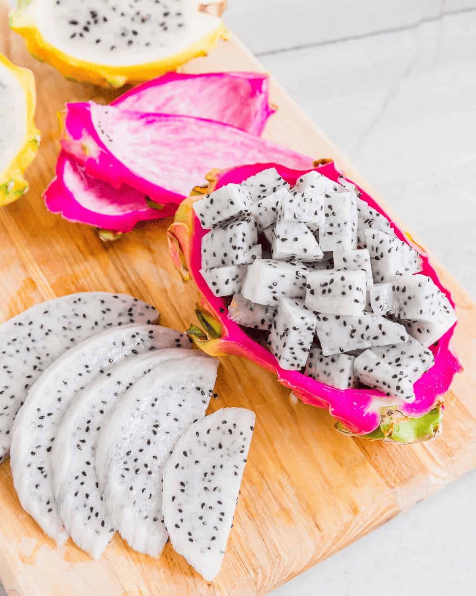

-
Mango
It’s very sweet and tangy at the same time.
-
Strawberry
It has a rich flavor that I like and I like strawberry shakes.
-
Kiwi
It’s just a different fruit to me and I like that.
-
Raspberry
I’ve always liked these and they are easy to eat. I’m just not a fan of the seeds in smoothies.
-
Green Grapes
They can be sour at times and I like the crunch.
-
Purple Grapes
I like the flavor and crunch as well.
-
Peach
It gives me the vibes of an apple but I like the taste of peach better.
-
Banana
The taste is good but I don’t like the stringy part of it.
-
Dragon Fruit
I like how this fruit is different but it is tasteless so not the most enjoyable to eat.

-
Blueberry
These are good but they are always hit and miss with me.